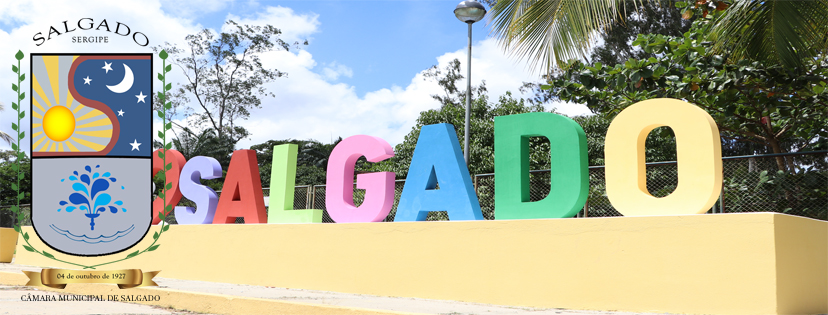

Salgado
História
Salgado é um município brasileiro do estado de Sergipe. Encontra-se na região Centro-Oeste do Estado. A sede do município localiza-se às margens da rodovia federal BR-349, que liga Aracaju a Brasília.
As terras do atual município começaram a ser povoada na metade do século XIX, surgindo uma povoação chamada Pau Ferro ou Salgadinho. A localização só começou a merecer registro a partir da construção da linha férrea, em 1911, sendo buscada pelos habitantes de Estância, por ser o melhor ponto para o embarque de trens. Em 1927 foi desmembrado de Boquim e elevado a município de Salgado. Em 1938 sua sede passou à categoria de cidade.
fonte: https://pt.wikipedia.org/wiki/Salgado_(Sergipe)Pontos Turísticos
Ecoparque Timbó - Salgado
O Ecoparque Timbó foi criado em fevereiro de 1997 e ocupa uma área de 900.000 m², com grande área verde, com muita água corrente e natural, onde seus frequentadores, podem desfrutar do turismo ecológico, rural e de muita aventura. Estamos localizados no município de Salgado - Sergipe em uma área de preservação permanente - APP. Todos os banhos são de água CORRENTE e NATURAL. Horário de Funcionamento: Sábado, domingo e feriados das 8h às 17h. NÃO FUNCIONAMOS NOS MESES DE JULHO E AGOSTO. Trabalhamos com chalés.
Dados Gerais de acordo com o IBGE
| Prefeito (a) | GIVANILDO DE SOUZA COSTA |
| Vice-Prefeito (a) | - |
| Site do município | https://www.cidade-brasil.com.br/municipio-salgado.html |
| Área territorial | 247,83 km² |
| População estimada | 19.998 habitantes |
| Densidade demográfica | 80,7 ha./km² |
| IDHM | 0,609 |
| PIB per capita | R$ 9.301,33 |